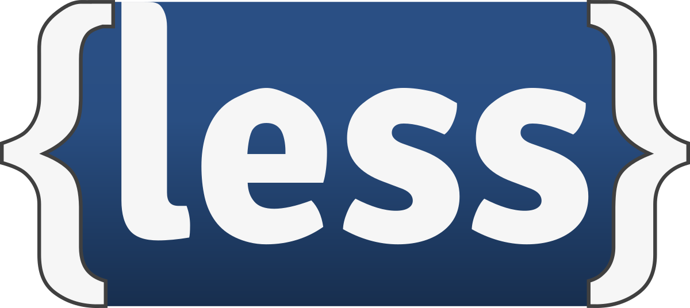

LESS
LESS — это динамический язык стилей, который разработал Alexis Sellier. Он создан под влиянием языка стилей Sass, и, в свою очередь, оказал влияние на его новый синтаксис «SCSS», в котором также использован синтаксис, являющийся расширением СSS. LESS — это продукт с открытым исходным кодом.
